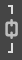
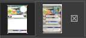

Les Conseils :
Petite liste de conseil non-exhaustive :
1 - Chargement des polices
Gimp ne charge les polices qu'au moment où il démarre. Donc si vous voulez rajouter vos propres polices il faut mieux le faire avant d'ouvrir Gimp, ou bien il faudra redémarrer le logiciel.
2 - Mise en évidence
Gimp entoure toujours dans l'image, la partie de l'image ou le groupe d'images que vous avez entourés dans la partie calque. Il l'entoure en jaune si c'est une image ou en bleu si ce calque contient plusieurs images.
3 - Déplacement groupe de calques
l'un des avantages à faire des groupes de calques étant que si vous le déplacez, tous ses "enfants" (= calques le composant) se déplacerons avec lui.
4 - Déplacement orthogonal
Si vous maintenez CTRL pendant que vous déplacez un calque, le calque se déplacera en conservant son abscisse ou son ordonnée.
5 - Couleurs personnalisées
Lorsque vous souhaitez utiliser une couleur particulière, vous devrier utiliser La pipette à couleur, puis copier la notation HTLM afin de la coller autre part.
6 - Police par défaut
Gimp prévilégera la police (ainsi que sa taille) inscrite dans l'option de l'outil de texte plutôt que celle utilisée sur la bulle. Ce qui signifie que si vous effacer tout le contenu d'une bulle de texte, Gimp prendra la police écrite dans les options de l'outil par défaut. Regardez donc bien si celle de l'option et de la bulle corresponde (au cas où j'en aurais oublié certaines).
7 - Ratio
le symbole de chaine :  sers à conserver les ratio entre les dimensions de l'images, si vous n'en voulez pas, cliquez dessus.
8 - Ordre des calques
Vous l'avez peut-être déjà remarqué mais Gimp trie l'ordre des calques de bas en haut, ce qui signifie qu'un calque ou groupe de calques placer plus haut sera mis au premier plan. C'est pour ça que le fond de la carte est tout en bas.
9 - Images d'exemple
Dans le groupe de calque "Les exemples", vous verrez des bouts de vrais cartes qui peuvent vous aider à voir à quoi une vraie carte Krosmaster
est censée ressembler. Dans le dossier de KrosTemplate, vous trouverez aussi un PDF, allez dans Gimp, Fichier > Ouvrir cliquer sur YUGO, ouvrez
entrez une résolution entre 500,000 et 1000,000. Vous aurez le PDF sur le côté pour pouvoir avoir une référence.
